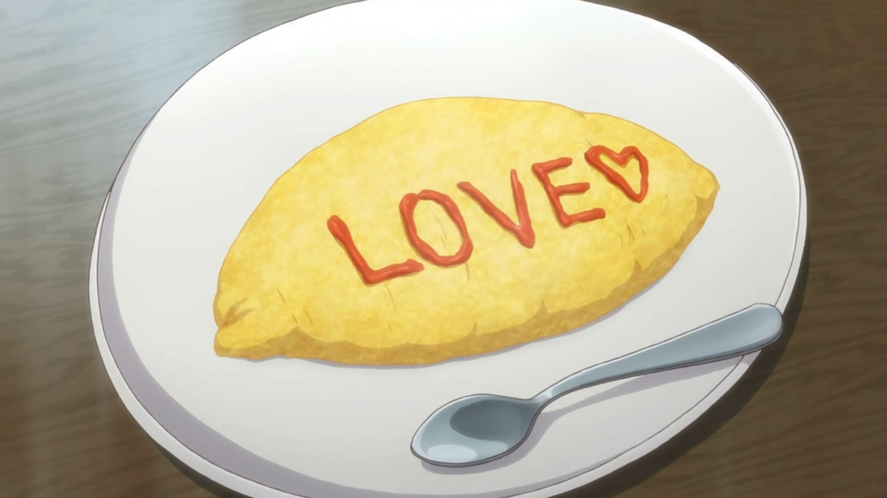
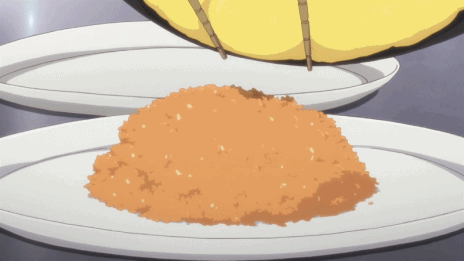
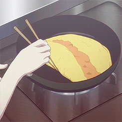

Omu-Rice Recipe!

Description:
Omu-rice is a recurring food that always seems to pop up in anime, particularly at times when feelings of love are in the air. Perhaps this is because it is typical to have a message or a person’s name written in ketchup across the top of the egg, which is perfect for round-about confessions of love. And, besides… the way to a man’s heart is through his stomach, right?
Omu-rice is basically fried rice wrapped or covered by egg and topped with ketchup. The word “omu-rice” is a combination of “omelette” and “rice”, and this dish is commonly made in many households, as well as in Western style restaurants, izakaya, and cafes (particularly maid cafes!) around Japan.
The Recipe:
Omu-rice
Makes 2 large servings.
Ingredients:
For the fried rice:
- 2 bowls of warm rice (about 1 cup of dried rice)
- ¼ cup frozen peas
- ½ onion, diced
- 50g chicken, cut into bite size pieces
- 2 tbsp butter
- 1 consome cube (or 1 teaspoon concentrated chicken stock)
- 2 tbsp ketchup
- 1 tsp sugar
- 100 ml water
For the omelette:
- Salt and pepper
- Butter or oil for the pan
- 4 eggs
Directions:
- Melt butter in a pan. Fry chicken and diced onion until the chicken is browned and the onion begins to soften and become translucent.
- Add consume cube, ketchup, sugar, and water to the pan. Bring to a boil, stirring occasionally, until the water mostly evaporates, leaving behind a thick liquid. Do not brown. Stir in peas.
- Add rice and mix gently until incorporated, making sure not to break the rice grains into small pieces. Season to taste with salt and pepper. Remove from heat and set aside.
- Heat up a frying pan with butter. While it’s heating, mound half of the fried rice on a plate and arrange in the shape of an oval with it’s two ends tapering to points. Whip eggs in a bowl until thoroughly mixed, seasoning to taste with salt and pepper.
- Cook half of the egg mixture as per one of the following instructions:
- After pouring the eggs into the pan, use chopsticks to gently push the egg to the center, scraping the bottom of the pan to allow for the liquid egg on top to reach the heat at the bottom of the pan. The omelette should develop ridges of bucked solidified egg with some loose egg on top.
Once the bottom is somewhat solid enough to move, begin to gently fold the omelette over itself, rolling it over so that the ridges and loose egg are hidden between and beneath the smoother solidified egg that cooked against the bottom of the pan. Make sure to also taper the two long ends to match the shape of your rice.
Immediately remove the egg from the pan and gently place onto the rice. Use a knife to cut through the first layer of the egg, along the length of the omelette, allowing the egg to slip open, covering the rice completely.

- Pour the eggs into the pan and let rest on a medium low heat until solidified on the bottom, swirling the uncooked egg around the pan to ensure it is evenly distributed. Be careful not to brown the egg. Once just solidified on the bottom of the pan, add half the rice along the center of the egg. Fold the top and bottom portions of the egg towards the middle. Flip omelette onto a plate.

- Serve immediately and decorate with ketchup…. The egg is your canvas!